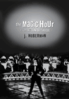
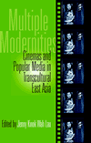

|
|
Andy
Warhol's Blow Job
Grundmann, Roy
A watershed in gay male culture
240 pp • 7x10 • Fall 2002
paper 1-56639-972-6
EAN 978-1-56639-972-2
cloth 1-56639-971-8
EAN 978-1-56639-971-5
|
|
|
Black
City Cinema
African American Urban Experiences in Film
Massood, Paula J.
From Green Pastures to Hoodz
280 pp • 6x9 • Fall 2002
paper 1-59213-003-8
EAN 978-1-59213-003-0
cloth 1-59213-002-X
EAN 978-1-59213-002-3
|
|
|
By
Heart/De Memori
Cuban Women's Journeys In and Out of Exile
Torres, Mar�a de los Angeles
Remembering with the heart events and people from our past
208 pp • 5.5x8.25 • Fall 2002
paper 1-59213-011-9
EAN 978-1-59213-011-5
cloth 1-59213-010-0
EAN 978-1-59213-010-8
|
|
|
Cat
Culture
The Social World of a Cat Shelter
Alger, Janet M., and Steven F. Alger
Understanding cats as social animals
256 pp • 5.5x8.25 • Fall 2002
paper 1-56639-998-X
EAN 978-1-56639-998-2
cloth 1-56639-997-1
EAN 978-1-56639-997-5
|
|
|
Detained
Immigration Laws and the Expanding I.N.S. Jail Complex
Welch, Michael
An inside look at the INS criminal justice system and its treatment
of detainees
264 pp • 6x9 • Fall 2002
paper 1-56639-978-5
EAN 978-1-56639-978-4
cloth 1-56639-977-7
EAN 978-1-56639-977-7
|
|
|
Emergency
Broadcasting and 1930s Radio
Miller, Edward D.
Radio, the nation, and the rise of the voice in broadcasting, in
a clearly written, significant history of the birth of the first
mass medium
264 pp • 5.5x8.25 • Fall 2002
paper 1-56639-993-9
EAN 978-1-56639-993-7
cloth 1-56639-992-0
EAN 978-1-56639-992-0
|
|
|
Financialization
of Daily Life
Martin, Randy
How investment banking and playing the market moved from Wall Street
to Main Street
240 pp • 5.5x8.25 • Fall 2002
paper 1-56639-988-2
EAN 978-1-56639-988-3
cloth 1-56639-987-4
EAN 978-1-56639-987-6
|
|
|
Free
Trade and Uneven Development
The North American Apparel Industry after NAFTA
Gereffi, Gary, David Spener, and Jennifer Bair
How NAFTA has reshaped the production of clothing in North America
368 pp • 7x10 • Fall 2002
paper 1-56639-968-8
EAN 978-1-56639-968-5
cloth 1-56639-967-X
EAN 978-1-56639-967-8
|
|
|
Global
Decisions, Local Collisions
Urban Life in the New World Order
Ranney, David
A new politics for a new economy
272 pp • 7x10 • Fall 2002
paper 1-59213-001-1
EAN 978-1-59213-001-6
cloth 1-59213-000-3
EAN 978-1-59213-000-9
|
|
|
Hitler's
Heroines
Stardom and Womanhood in Nazi Cinema
Ascheid, Antje
The brightest stars in fascist films
288 pp • 6x9 • Fall 2002
paper 1-56639-984-X
EAN 978-1-56639-984-5
cloth 1-56639-983-1
EAN 978-1-56639-983-8
|
| 
|
The
Magic Hour
Film at Fin de Si�cle
Hoberman, J.
A new anthology from one of America's foremost critics of movies
and culture
280 pp • 7x10 • Fall 2002
paper 1-56639-996-3
EAN 978-1-56639-996-8
cloth 1-56639-995-5
EAN 978-1-56639-995-1
|
| 
|
Multiple
Modernities
Cinemas and Popular Media in Transcultural East Asia
Lau, Jenny Kwok Wah
A comprehensive book on the complex relationship between media
and modernity in east Asia
264 pp • 7x10 • Fall 2002
paper 1-56639-986-6
EAN 978-1-56639-986-9
cloth 1-56639-985-8
EAN 978-1-56639-985-2
|
| 
|
The
New Left Revisited
McMillian, John, and Paul Buhle
You didn't have to be there
280 pp • 7x10 • Fall 2002
paper 1-56639-976-9
EAN 978-1-56639-976-0
cloth 1-56639-975-0
EAN 978-1-56639-975-3
|
|
|
Palestra
Pandemonium
A History of the Big 5
Lyons, Robert S.
A history of the most famous rivalries in college basketball, fought
out in the shrine to the game
240 pp • 8.5x11 • Fall 2002
cloth 1-56639-991-2
EAN 978-1-56639-991-3
|
|
|
Philadelphia
Jewish Life, 1940-2000
Friedman, Murray, and Dan Rottenberg
A new edition of the classic history of Jewish cultural and political
life in Philadelphia
328 pp • 8.5x11 • Fall 2002
cloth 1-56639-999-8
EAN 978-1-56639-999-9
|
|
|
Philadelphia
Murals and the Stories They Tell
Golden, Jane, Robin Rice, Monica Yant Kinney, David Graham, and Jack
Ramsdale
The most important public art program in the United States
160 pp • 9x11 • Fall 2002
cloth 1-56639-951-3
EAN 978-1-56639-951-7
|
|
|
Policing
Pop
Cloonan, Martin, and Reebee Garofalo
The sounds of surveillance
256 pp • 7x10 • Fall 2002
paper 1-56639-990-4
EAN 978-1-56639-990-6
cloth 1-56639-989-0
EAN 978-1-56639-989-0
|
|
|
Pop
Music and the Press
Jones, Steve
Seeing pop music journalism as a form of cultural criticism
288 pp • 6x9 • Fall 2002
paper 1-56639-966-1
EAN 978-1-56639-966-1
cloth 1-56639-965-3
EAN 978-1-56639-965-4
|
|
|
The
Rule of Racialization
Class, Identity, Governance
Martinot, Steve
A significant re-writing of the history of class formation in the
US
256 pp • 7x10 • Fall 2002
paper 1-56639-982-3
EAN 978-1-56639-982-1
cloth 1-56639-981-5
EAN 978-1-56639-981-4
|
|
|
The
Skeptical Visionary
A Seymour Sarason Education Reader
Fried, Robert L., and Seymour Sarason
The first collection of writings by education's most important
and critical voice
312 pp • 7x10 • Fall 2002
paper 1-56639-980-7
EAN 978-1-56639-980-7
cloth 1-56639-979-3
EAN 978-1-56639-979-1
|
|
|
Sportsex
Miller, Toby
How people perform their sexual identities as athletes and spectators
New in Paperback!
192 pp • 6x9 • Spring 2001
paper 1-56639-994-7
EAN 978-1-56639-994-4
|
|
|
Time
to Care
Redesigning
Child Care to Promote Education, Support Families, and Build Communities
Joan Lombardi
A blueprint for promoting childcare in America
248 pp • 6x9 • Fall 2002
paper 1-59213-009-7
EAN 978-1-59213-009-2
cloth 1-59213-008-9
EAN 978-1-59213-008-5
|
|
|
Tortilleras
Hispanic and U.S. Latina Lesbian Expression
Perpetusa-Seva, Inmaculada, and Lourdes Torres
Latina and Latin American lesbian culture made visible
288 pp • 7x10 • Fall 2002
paper 1-59213-007-0
EAN 978-1-59213-007-8
cloth 1-59213-006-2
EAN 978-1-59213-006-1
|
|
|
Transcommunality
From
the Politics of Conversion to the Ethics of Respect
John Brown-Childs
How can we build long-lasting communities and movements for change?
256 pp • 7x10 • Fall 2002
paper 1-59231-005-4
EAN 978-1-59231-005-4
cloth 1-59213-004-6
EAN 978-1-59213-004-7
|
|
|
Understanding
Mainland Puerto Rican Poverty
Baker, Susan S.
A new understanding of the impoverishment of Puerto Ricans living
on the mainland
256 pp • 6x9 • Fall 2002
paper 1-56639-970-X
EAN 978-1-56639-970-8
cloth 1-56639-969-6
EAN 978-1-56639-969-2
|